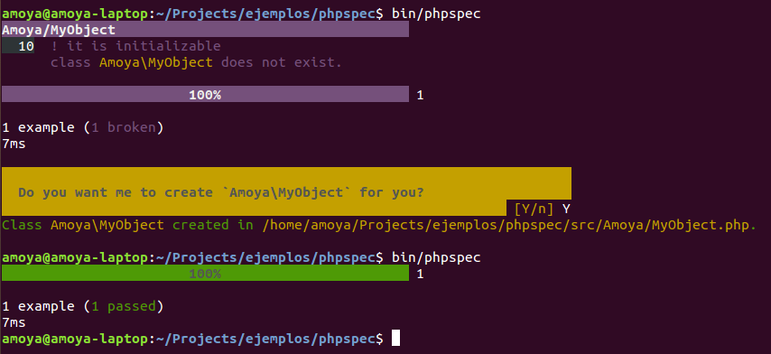

Desarrollo Ágil
con BDD
Construyendo el producto correcto de manera efectiva
Adrian Moya / @adrianmoya
2013
Agilidad
Capacidad de realizar una tarea o acción
de la manera más rápida y eficiente
Iterativo
Iteraciones cortas y de duración fija
Participación activa del cliente
Cada iteración es aprobada por el cliente, la retroalimentación se implementa en la(s) iteraciones siguientes
Dirigido por características
Principio 80/20 para implementar 20% de características que se usen el 80% de las veces
Tiempo fijo
Cada iteración se entrega en un tiempo fijo predeterminado
Entrega basada en prioridades
Prioridad a las necesidades del clientes
y el riesgo en el desarrollo
Adaptable
No buscamos remover la incertidumbre, sino adaptarnos a las necesidades cambiantes
Equipos Auto-organizados
Activamente involucrado, con capacidad de toma de decisiones
Centrado en las personas
Más énfasis en las personas y sus habilidades
que en el proceso
Desarrollo rápido
Utilizando tecnologías lígeras
Más disciplinado
Más rapidez y calidad
involucra disciplina de equipo y personal
Simplicidad
Énfasis en la simplicidad y abierto al cambio
¿Por qué no todos usan ágil?
No son una bala de plata
Es difícil implementar ágil correctamente
BDD nos ayuda a implementar ágil
¿Qué es BDD?
En palabras de Dan North
El uso de ejemplos en múltiples niveles para crear un entendimiento compartido y sacar a flote la incertidumbre para construir software que importa
El uso de ejemplos...
Sucesión de Fibbonaci

Ejemplo: 0, 1, 1, 2, 3, 5, 8...
...en multiples niveles...
A nivel del negocio en su lenguaje natural...
Escenario: listar clientes con deuda por vencer
Dado que existen los siguientes clientes:
|cliente | fecha_vencimiento_deuda |
| Adrian | 30/05/2013 |
| Carlos | 15/06/2013 |
Y que la fecha actual es "28/05/2013"
Cuando solicito la lista de clientes con deuda por vencer
Entonces debo ver listado a "Adrian"
Pero no debo ver listado a "Carlos"
A nivel del código en el lenguaje de programación
namespace spec;
use PhpSpec\ObjectBehavior;
class MarkdownSpec extends ObjectBehavior
{
function it_converts_plain_text_to_html_paragraphs()
{
$this->toHtml("Hi, there")->shouldReturn("Hi, there
");
}
}
...para crear un entendimiento compartido...
...y sacar a flote la incertidumbre...
...para construir software que importa
¿Qué es software que importa?
Aquel que genera valor a la organización
“Un proyecto genera valor de negocio cuando aumenta o protege la ganancia, o reduce los costos, en alineación con la estrategia de la organización.”
Andy Pols & Chris Matts - Agile 2008
Ciclo de vida BDD
BDD de historias
Explorar el dominio
Nos permite explorar el dominio del negocio en 3 niveles
- Narrativas
- Posibles escenarios
- Detalle de escenarios
Narrativa
Para alcanzar alguna característica que agrega valor de negocio
Como rol en el sistema (beneficiario)
Yo quiero/necesito realizar alguna acción en el sistema
Autenticación
Para poder acceder a mi información financiera
Como cliente del banco
Yo necesito poder autenticarme
Escenarios
Característica: Autenticación
Para poder acceder a mi información financiera
Como cliente del banco
Yo necesito poder autenticarme
Escenario: Sin tarjeta de débito activa (cliente nuevo)
Escenario: Tarjeta activa primera vez
Escenario: Autenticación normal sin seguridad adicional
Escenario: Autenticación normal con seguridad adicional
Escenario: ...
Detalle del escenario
Expresado en un lenguaje simple:
- Dado: un cierto contexto
- Cuando: realizo una acción en el sistema
- Entonces: el sistema se comporta de cierta manera
Característica: Autenticación
Para poder acceder a mi información financiera
Como cliente del banco
Yo necesito poder autenticarme
Escenario: Sin tarjeta de débito activa (cliente nuevo)
Dado un cliente "Adrian" con cedula "12345" y tarjeta inactiva
Y que me encuentro en la página de autenticación
Cuando ingreso la cédula "12345"
Y presiono el botón "Autenticar"
Entonces debo ver un mensaje que me invite a activar mi tarjeta
BDD de historias ayuda a que el equipo de desarrollo tenga un entendimiento del negocio al mismo nivel que el cliente, forzandolo a que conteste las preguntas:
- ¿Para quien?
- ¿Qué?
- ¿Cómo?
Pero más importante...
¿POR QUE?
<?php
Herramienta para aplicar BDD de historias
Instalación
Usamos composer:
{
"require-dev": {
"behat/behat": "2.4.*@stable"
},
"config": {
"bin-dir": "bin/"
}
}
$> composer.phar install --dev
Nuestra primera característica
$> bin/behat --init +d features - place your *.feature files here +d features/bootstrap - place bootstrap scripts and static files here +f features/bootstrap/FeatureContext.php - place your feature related code here
Creamos nuestros archivos de características features/Autenticacion.feature
$ bin/behat
Característica: Autenticación
Para poder acceder a mi información financiera
Como cliente del banco
Yo necesito poder autenticarme
Escenario: Sin tarjeta de débito activa (cliente nuevo) # features/Autenticacion.feature:9
Dado un cliente "Adrian" con cedula "12345" y tarjeta inactiva
Y que me encuentro en la página de autenticación
Cuando ingreso la cédula "12345"
Y presiono el botón "Autenticar"
Entonces debo ver un mensaje que me invite a activar mi tarjeta
1 escenario (1 sin definir)
5 pasos (5 sin definir)
0m0.016s
Puedes implementar la definición de pasos de los pasos sin definir con el siguiente código:
/**
* @Given /^un cliente "([^"]*)" con cedula "([^"]*)" y tarjeta inactiva$/
*/
public function unClienteConCedulaYTarjetaInactiva($arg1, $arg2)
{
throw new PendingException();
}
/**
* @Given /^me encuentro en la página de autenticación$/
*/
public function meEncuentroEnLaPaginaDeAutenticacion()
{
throw new PendingException();
}
use Behat\Behat\Context\ClosuredContextInterface,
Behat\Behat\Context\TranslatedContextInterface,
Behat\Behat\Context\BehatContext,
Behat\Behat\Exception\PendingException;
use Behat\Gherkin\Node\PyStringNode,
Behat\Gherkin\Node\TableNode;
/**
* Features context.
*/
class FeatureContext extends BehatContext
{
/**
* @Given /^un cliente "([^"]*)" con cedula "([^"]*)" y tarjeta inactiva$/
*/
public function unClienteConCedulaYTarjetaInactiva($arg1, $arg2)
{
throw new PendingException();
}
Queremos ejercitar el sistema de la manera que lo haría nuestro cliente
...si es una aplicación web, debemos usar un navegador...
Existen 2 tipos de navegadores para pruebas automatizadas
- Emuladores de navegadores sin interfaz: ej. Goutte, Zombie.js
- Controlador de navegadores reales: Chrome, Firefox, IE
Mink
Es un complemento de Behat que nos ofrece un API único para controlar distintos tipos de navegadores
Instalación
Usamos composer:
{
"require-dev": {
"behat/behat": "2.4.*@stable",
"behat/mink-extension": "*",
"behat/mink": "1.4@stable",
"behat/mink-goutte-driver": "*"
},
"config": {
"bin-dir": "bin/"
}
}
$> composer.phar install --dev
class FeatureContext extends BehatContext
{
static private $APP_URL = "http://localhost/bddsample/";
private $session;
/** @BeforeScenario */
public function before()
{
$driver = new GoutteDriver();
$this->session = new Session($driver);
$this->session->start();
}
/**
* @Given /^me encuentro en la página de autenticación$/
*/
public function meEncuentroEnLaPaginaDeAutenticacion()
{
$this->session->visit(self::$APP_URL/autentication);
if(200 !== $this->session->getStatusCode()){
throw new \RuntimeException('No pude abrir la página de autenticación');
}
}
Es hora de comenzar a codificar...
BDD de especificaciones
Diseño emergente
Nos permite describir como interactúan los objetos para resolver un problema, sus roles, responsabilidades y mensajes
- De manera iterativa
- A través de ejemplos de codigos
Tradicionalmente: BDUF
- Difícil de cambiar más adelante
- Tenemos que pensar en todo antes de codificar
- Tratamos de que no se nos escape nada
...pero la realidad es...
Costo del cambio
Aumenta exponencialmente en las fases tardías del desarrollo
Ciclo SpecBDD
- Usamos pruebas para especificar el comportamiento
- Usamos dobles para especificar el intercambio de mensajes
Más facil decirlo que hacerlo
BDD de especificaciones es una técnica
que requiere mucha práctica
Instalación
Usamos composer:
{
"require-dev": {
"phpspec/phpspec": "2.0.*@dev"
},
"config": {
"bin-dir": "bin"
},
"autoload": {"psr-0": {"": "src"}}
}
$> composer.phar install --dev
Describimos un objeto
$> bin/phpspec desc Amoya/MyObject Specification for Amoya\MyObject created in /home/amoya/Projects/ejemplos/phpspec/spec/Amoya/MyObjectSpec.php.
namespace spec\Amoya;
use PhpSpec\ObjectBehavior;
use Prophecy\Argument;
class MyObjectSpec extends ObjectBehavior
{
function it_is_initializable()
{
$this->shouldHaveType('Amoya\MyObject');
}
}
Ejecutamos las especificaciones
Agregamos una especificación
class MyObjectSpec extends ObjectBehavior
{
function it_is_initializable()
{
$this->shouldHaveType('Amoya\MyObject');
}
function it_returns_foo_when_i_call_bar()
{
$this->bar()->shouldReturn("foo");
}
}
Ejecutamos las especificaciones
Nuestro código actual
namespace Amoya;
class MyObject
{
public function bar()
{
// TODO: write logic here
}
}
Implementamos el comportamiento esperado
namespace Amoya;
class MyObject
{
public function bar()
{
return "foo";
}
}
Ejecutamos las especificaciones
Prophecy
Librería para construir dobles en PHP
Agregamos una especificación
namespace spec\Amoya;
use PhpSpec\ObjectBehavior;
use Prophecy\Argument;
class MyObjectSpec extends ObjectBehavior
{
/**
* @param Amoya\OtherObject $collaborator
*/
function it_sends_a_message_to_collaborator($collaborator)
{
$collaborator->sendMessage()->shouldBeCalled();
$this->setCollaborator($collaborator);
// when
$this->bar();
}
Ejecutamos las especificaciones
Implementamos el comportamiento esperado
namespace Amoya;
class MyObject
{
private $collaborator;
public function __construct()
{
$this->collaborator = new OtherObject;
}
public function bar()
{
$this->collaborator->sendMessage();
return "foo";
}
Ejecutamos las especificaciones
Repetir
- Hasta que todas las especificaciones esten en verde
- Hasta que los escenarios de BDD de historia esten en verde
Recursos
Sitio de la comunidad - http://agilescolombia.org/
Próximos eventos - http://www.meetup.com/AgilesColombia/
Foro - https://groups.google.com/forum/?fromgroups#!forum/agiles-colombia
Sitio web - http://sparkta.co/
Entrenamiento, consultoria, talleres en temas ágiles